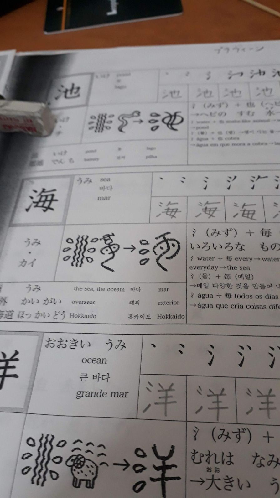

Year One: Learning Japanese… and Bow in Sync
I'm standing in the middle of Tokyo, jet-lagged, a suitcase in one hand, and four equally confused colleagues by my side. We've just landed, clueless about the grand adventure ahead: learning Japanese, mastering the Tokyo subway system, and, as I quickly discovered, bowing in sync with everyone else like it's a secret handshake of respect.
You don't have to be great to start, but you have to start to be great.
Chapter 1: Tokyo, Language, and Bowing 101
First stop, language school. You'd think learning Japanese would be as easy as clicking "install" on an app, right? Wrong. My classmates and I wrestled with Minna no Nihongo—the textbook that smiled at us like it knew something we didn't. 20 chapters in two and a half months? Done. Can I confidently order food without accidentally asking for the chef's phone number? That's still debatable.
But one thing I did nail? The bowing. I became a pro at bowing in sync. At this point, I'm practically half-Japanese. Right?
Chapter 2: Golden Week - The Ultimate Tourist Sprint
Golden Week arrived, Japan's glorious break. Time to stretch the legs and hit every tourist spot on Google's top 10. Shibuya, Shinjuku, Roppongi, Ueno, Yokohama, Disney Land, Tokyo Skytree—check, check, check! It was like being in a video game, but without the save button. In Shibuya's famous scramble crossing, I thought I might lose a colleague or two in the crowd. But we survived. Disney? Let's just say Mickey doesn't speak my level of Japanese, and that's perfectly okay.
Chapter 3: The Tokyo Subway - Master's Degree Required
Navigating the Tokyo subway feels like trying to solve a Rubik's Cube with your eyes closed. There are colors, numbers, letters, and, naturally, none of them make sense together. But with time, a lot of wrong turns, and a healthy amount of patience from Japanese commuters, I became a subway ninja. Now I could get anywhere in Tokyo, as long as I had Google Maps… and Wi-Fi. Let's not talk about the days I lost signal. That's a different kind of horror story.
Chapter 4: Oita - From Subways to Serenity
Just when I thought I'd conquered Tokyo, FIG Inc transferred me to Oita. New city, new challenges. The move was smooth—if you don't count the fact that I arrived just in time for my first typhoon and earthquake. Oh, and it snowed. Welcome to Oita! If Mother Nature was testing me, I think I passed.
Chapter 5: Work, Quakes, and Hot Springs
At FIG INC's office, I got busy building Android apps for taxis using React. Coding in Japan felt like a full-circle moment, except for the moments when an earthquake shook the desk. Let me tell you, trying to debug code while the room sways is an experience. But it wasn't all quakes. Oita, famous for hot springs, gave me a front-row seat to Beppu and Yufuin's steamy landscapes. It was like sitting in a hot tub… a really giant, naturally heated hot tub.

Chapter 6: Hanabi, Izakaya, and First Times
I had a lot of “firsts” in Japan. My first Hanabi (fireworks) show left me awestruck, while my first visit to an izakaya had me wondering if I'd ever leave. Imagine cozy, casual dining, surrounded by good food, drinks, and friends—basically heaven in a tiny Japanese restaurant. And let's not forget the food tour: I sampled cuisine from Indian, Nepali, Sri Lankan, and, of course, Japanese restaurants. If my taste buds could talk, they'd still be thanking me.
Chapter 7: OutSystems 10 Certified Associate Web Developer
As if learning Japanese and navigating life in Japan wasn't enough, I decided to add one more challenge to the list—getting certified as an OutSystems 10 Associate Web Developer. Because why not, right? After hours of studying and building web apps, I finally cleared the certification. It wasn't easy juggling coding projects, language learning, and sightseeing, but it was worth it. Now I had an official badge proving that I could handle web development like a pro—well, at least in OutSystems! The certification was a big win and helped me take my skills up a notch, just in time for the next adventure.
See my achievement here
Chapter 8: JLPT N5 - Victory Lap
After months of studying, bowing, and more than a few language mix-ups (let's just say asking for directions didn't always go smoothly), I cleared the JLPT N5. That's right, I can officially say I passed my first Japanese language test! I now know at least 400% more than I did on day one, which is impressive until I remember the Minna no Nihongo book still has more volumes waiting for me…
Chapter 9: Sayonara, Japan (For Now)
As the year wrapped up, it was time to pack my bags and head back to India, suitcase heavier with memories than it was with souvenirs (although I definitely squeezed in a few). My year in Japan was more than just coding and sightseeing—it was bowing at just the right angle, surviving the subway, making new friends, and experiencing life in a country where everything, from language to typhoons, was an adventure.
And as I left Japan, I couldn't help but bow. Just one last time. Perfectly in sync, of course.